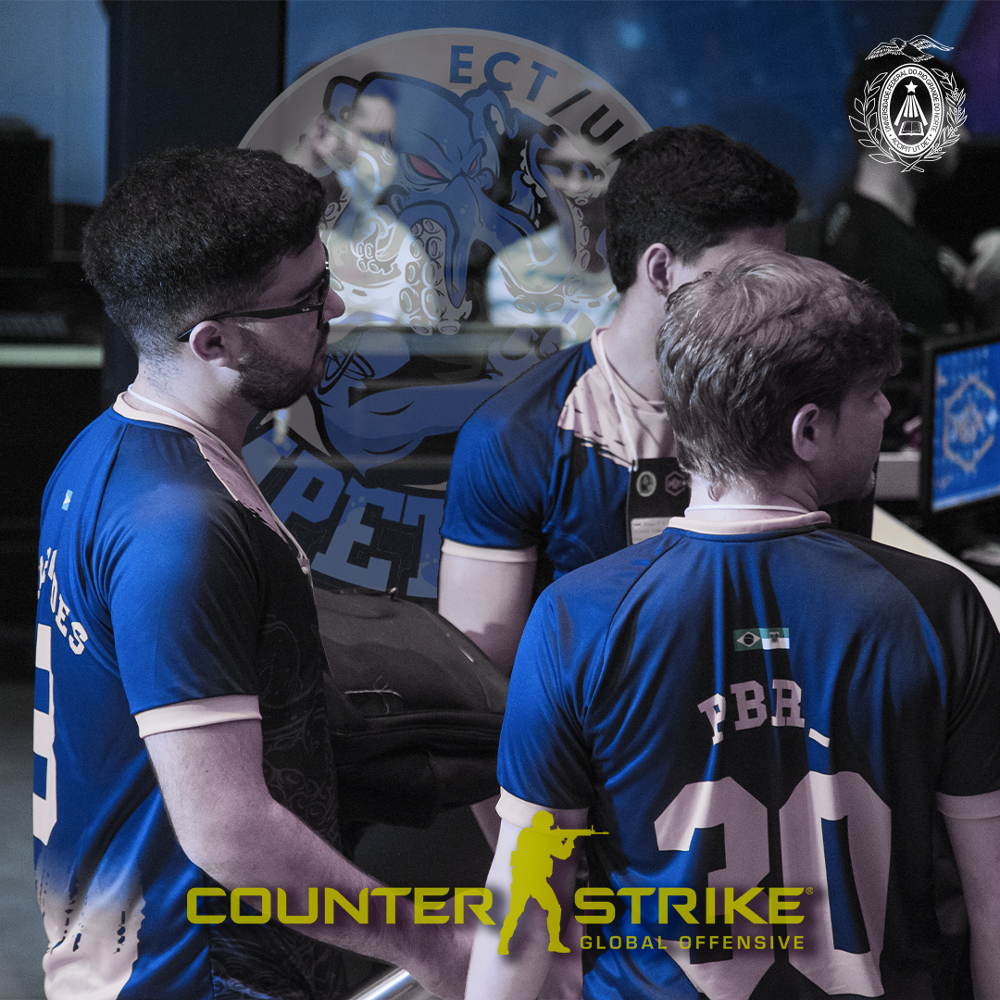
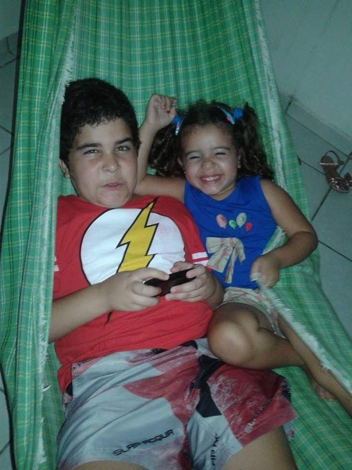
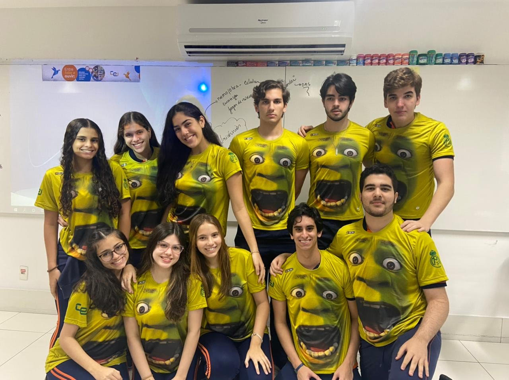
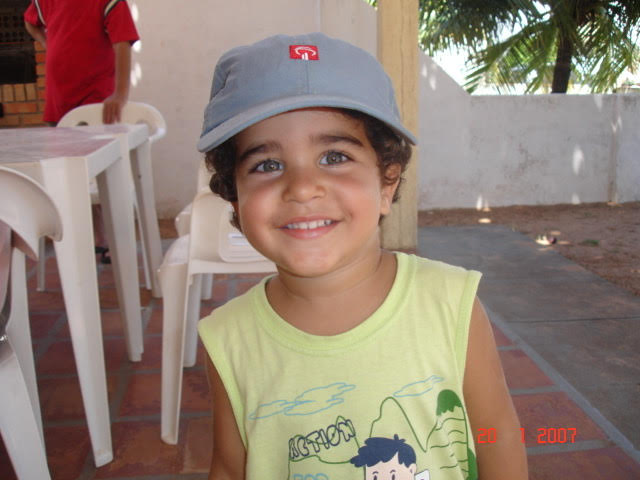

Acho que um bom começo é pelo meu nome. Na verdade, um melhor começo é
pelas curisidades relacionadas aos nomes na minha família: meu avô
paterno se chama Ademar, e minha avó paterna, Salomé. Por algum
motivo, esse belo casal decidiu que todos seus filhos começariam com A
(de Ademar, eu suponho) e todas as filhas começariam com S (adivinhem
o porquê) - e assim foi feito. Meu pai, Adelmo, acatou a ideia e assim
todos seus filhos começam com A, e eu acredito que terei que seguir a
tradição quando tiver filhos.
Coincidência ou não, todos os dois filhos da minha mãe, Olenka, têm
'k' no nome - e ela também (eu não sei se isso foi planejado ou não,
um dia eu pergunto). Aliando as RPNF (Regras Para Nomes de Filhos) do
meu pai e da minha mãe, nascem o meu irmão, Alek, e eu, Ankier.
Você talvez esteja se perguntando: DE ONDE C@#@%&$ VEIO ESSE
NOME? Calma pô, assim você me ofende. Meu pai queria dar um nome
diferentão, pra que funcionasse como uma "assinatura", e meio que só
tivesse eu com esse nome... acho que deu certo, nunca encontrei um
xará. Assim sendo, buscou inspiração la na França, quer dizer, quase -
ele se inspirou no nome de
Olivier Anquier, um chef francês naturalizado brasileiro e que minha mãe achava
bonito (achava o chef bonito, não o nome).
Ah, e ainda sobre meu
nome, os meus sobrenomes juntos (José Barreira Lima) quase formam o
nome do meu avô materno (José Barreira Lima Verde), achei a homenagem
bem legal.
Vou aproveitar a oportunidade para mencionar as
melhores tentativas de pronunciar meu nome: Anchieta, Anvião
(professora meteu essa na entrega de provas), Ankiér, Ânkier e Diego
(acreditem se quiser). Obs: a pronuncia certa é Ankiê.
Obviamente, eu não espero que as pessoas saibam pronunciar meu nome
- quando acertam de primeira, eu fico impressionado
Acho que não. Mas, meu pai conta que, quando eu tinha uns 6 anos, eu
cheguei nele com um mini violão de nylon que ele me deu dizendo que eu
formava uma banda com mais 5 pessoas, que eu era guitarrista, a
vocalista era uma menina, e a banda se chamava "Espiral". Até hoje,
ele conta essa história como se fosse a prova de que em outras vidas
eu era músico, já que uma criança dessa idade não conseguiria dar
esses detalhes e sequer saberia falar "Espiral" - eu acho que não é
pra tanto.
Apesar de não achar que eu fui um
Jimi Hendrix
em vidas passadas, sempre gostei de rock, linhas de baixo e solos de
guitarra. Sou completamente viciado em tudo do Charlie Brown Jr., e o
Champignon (baixista da banda, na imagem ao lado junto do Chorão) foi
um dos grandes responsáveis por eu estipular como meta de vida
aprender a tocar baixo. Ainda sobre o assunto CBJr, tem uma outra
curiosidade interessante: a minha formação musical se deu pelo meu pai
e as músicas que ele escutava no carro, que iam de Pink Floyd à Djavan
(só musicasso). Dentre todas as músicas que ele colocava, uma me
chamava atenção -
"Proibida Pra Mim", na voz de Zeca Balero - toda vez que entrava no carro, eu pedia pra ele colocar a música
"do cabelo engraçado" e sabia cantar do começo ao fim. Mais tarde é
que fui descobrir que essa música, na verdade, era do CBJr, banda que
já havia virado trilha sonora da minha adolescência.
Já que estou no tópico "música", vou aproveitar pra falar
resumidamente sobre meus gostos: como disse, sou do rock nacional, e
tirando CBJr (elite) também curto O Rappa, Skank, Raimundos, Capital
Inicial e Legião Urbana.
Calma, eu não levo violão pra resenha pra ficar tocando "Tempo
Perdido".
Mas, ainda assim, tenho um gosto bem eclético, também gosto de
um MPB (Djavan, Seu Jorge, Caetano, Chico Buarque, Vanessa da
Mata...), Rap nacional (Racionais, Costa Gold das antiga, Haikaiss, Um
Barril de Rap, Froid, Djonga, Emicida, Criolo, Don L...) e
internacional (Eminem, Kendrick Lamar, 50 Cent...), além de outros
estilos.
Minha música favorita é
Como Tudo Deve Ser, do Charlie Brown Jr. Esse solo do Champs arrepia a alma.
Acho que outra curiosidade interessante sobre mim é que o jogo que sempre estou jogando é Counter Strike, nem sei como, por que esse jogo só me da raiva. Eu conheci o jogo através do meu irmão, na época em que o computador da casa era compartilhado entre nós dois (ele usava em um turno do dia, eu em outro) e eu ainda era criança, por volta de 2015; mas só comecei a jogar mesmo em 2019. Mostrei o jogo pra alguns amigos, e um deles, Gabriel, gostou bastante e começamos a jogar juntos direto. O problema é que Gabriel acabou ficando extremamente competitivo e se tornou bem melhor que eu, o que fez com que as partidas fossem bem estressantes e eu acabasse levando mais grito do que qualquer outra coisa. Mas até que isso foi bom, já que na força do ódio eu acabei melhorando bastante: no nosso auge, ele era level 20 GC (nível máximo) e eu, level 17.

Inclusive, fui
(teoricamente, ainda sou) player
da gigantesca Impetuosa, atlética do meu curso. Participar do time foi
uma experiência show de bola, me sentia um jogador profissional mesmo
jogando mal que só. Só jogamos um campeonato e conseguimos chegar na
final, que era presencial, no Natal Shopping. Adivinhem quem estava no
outro time. Isso mesmo. Gabriel. Parece até roteiro de filme né? Os
dois que conheceram o jogo juntos e melhoraram juntos se enfrentando
numa final... eu só acho que o filme seria mais empolgante se essa
final fosse mais disputada. O resultado final não foi o melhor pra
nós: levamos um amasso e Gabriel foi o melhor jogador do campeonato.
Logicamente, até hoje ainda escuto provocações da parte dele
semanalmente, mas levo numa boa.
Inclusive, olha aí: já tenho
familiaridade com a camisa azul e amarela, alô Include!
.jpg)
Os dois times que disputaram a final. Gabriel é o segundo da esquerda pra direita, e eu o terceiro.
Tudo isso aí ocorreu no CS:GO (Counter Strike: Global
Offensive). Infelizmente, o jogo atualizou para CS2, ficando
bem mais bonito, o que significa um motor gráfico bem mais pesado
(muita areia pro caminhãozinho que é meu computador), por isso, meu PC
começou a não rodar tão bem o jogo e minha frequência nos servers
acabou diminuindo, embora eu ainda jogue de vez em quando. Ainda faço
parte da Impetuosa, mas não consigo jogar o jogo :/ . Mas a esperança
é a última que morre, já que pretendo fazer um upgrade no computador
muito em breve.
Ah, e meu nick é MARCONDES, por que na hora que
fui criar a conta, pensei em criar um personagem que seria policial,
já que CS é meio que Terroristas x Contra-Terroristas, e achei que
MARCONDES é bem nome de policial. Espero que vocês concordem.
Meu pai foi jogador de futebol, jogou no América e no ABC, e diz ele
que seria um dos melhores do Brasil e quiçá do mundo se não fosse as
fraturas no joelho (esse papinho é antigo) - de fato, já perdi as
vezes que encontramos conhecidos dele por aí e eles passaram minutos
elogiando meu pai, falam que ele jogava demais. Até por isso, o
futebol sempre foi muito presente na minha casa; meu pai falava sobre
Pelé, Garrincha, etc. Comecei a me interessar pelo esporte muito cedo,
e entrei no futsal da escola - acredito que passei uns 3 anos fazendo
futsal, quando fui expulso, sim, expulso, do futsal. Eu não tinha
idade para continuar na categoria que estava, nem habilidade para
fazer parte do grupo que foi escolhido para fazer parte da categoria
seguinte.
Daí, passei um período curto treinando fora da escola,
dessa vez em campo mesmo (o campo da UFRN, inclusive), e o técnico era
amigo do meu pai, jogavam juntos nas antigas.
Hoje em dia, só
jogo quando tem alguma pelada, evento relativamente raro.
Ah, e
eu sou mecão, óbvio.
Duolingo: Eu tenho uma streak de 783 dias no Duolingo de francês. (tenho que fazer jus à origem do meu nome)
Ossos e alergias: Nunca quebrei nenhum osso e não tenho alergia a nada :)
Tio aos 10 anos: Como meu pai tem filhos de outro casamento, aos 10 anos eu era tio. E sim, o nome das minhas duas sobrinhas começa com A. Na imagem à direita, temos eu e Anny Vitória (desculpa pela careta). O nome da minha outra sobrinha é Alice.
Tio de pet: Eu moro com meu irmão e seu filho, um gato canadense (meu irmão morou no Canadá por 2 anos) chamado Madrigal.
Viagens: O lugar mais longe que fui foi Gramado-RS. Ainda não sai do país, infelizmente.
Olimpíadas: Eu era um dos únicos que gostava quando tinha olimpíadas de matemática ou ciências para fazer. Tenho 11 medalhas em olimpíadas, entre OMRN, ONC, OBA, e Canguru; minha kryptonita era a OBMEP, nunca consegui medalha nela.
Jogos Internos: Os nomes das minhas camisas de JI foram "Charlie Brownie Jr" (porque eu era gordinho e so escutava CBJr), "Marcondes" (meu nick no CS), "Onci" (vou me abster de explicar) e "Zé Barreira". Inclusive, no ano de pré, eu dei a ideia da nossa camisa ser do Shrek. Resultado:
Indecisão com o curso: Entrei no ano de pré sem saber o que queria fazer da vida, e escolhi Engenharia da Computação por gostar de exatas e de ficar no computador (kkkkkkk). Meu irmão já havia seguido caminho parecido: se formou em C&T e durante a ênfase em Eng. da Computação decidiu ir pro Canadá.
Monitoria: Atualmente, eu sou monitor de Álgebra Matricial e Vetorial (antiga VGA) na ECT. Eu (ainda) não me canso de escalonar e reduzir matrizes. Brincadeiras à parte, tem sido uma experiência bem legal ajudar a galera a entender a disciplina.
Academia: Pode não parecer, mas um dos meus "hobbies" é ir para academia, e meu humor está diretamente relacionado à eu ter ido ou não treinar no dia (quando não vou me sinto inútil).
Cozinha: Eu gosto bastante de cozinhar, de vez em quando eu tento me arriscar numas receitas diferentonas. Pessoal daqui de casa geralmente gosta de tudo que eu faço e minha cunhada falou que eu deveria fazer um curso de gastronomia por ter o dom, então, modéstia a parte, acho que cozinho bem.
Aniversário: Faço anivesário dia 11/08, o que faz com que eu seja de Leão, seja lá o que isso signifique. Não acredito nem um pouco em horóscopo e questiono o QI de quem acredita.
Eu criança: Quando eu era criança, tinha cabelo enrolado e pique de galã. Fui piorando à medida que cresci, eu acho. Olhem ai na imagem ao lado, que criança linda. Não parece, mas sou eu.